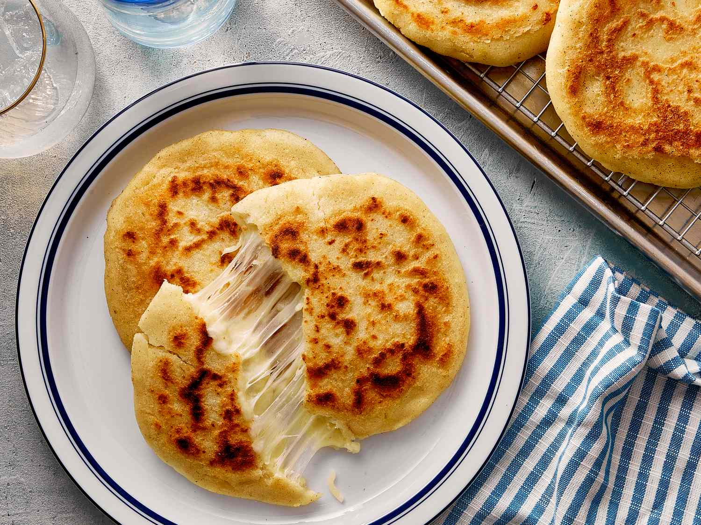

Arepas

Home
Colombian corn cakes
Ingredients
- 2 cups masarepa (pre-cooked white or yellow cornmeal — Goya or P.A.N. brand)
- ~1½ cups warm water
- 1 tsp salt
- Optional: 1 tbsp butter
- Shredded cheese (mozzarella or a mild melty cheese)
Steps
- Mix cornmeal and salt in a bowl. Gradually add warm water and knead until a smooth, soft dough forms — no cracks, slightly sticky.
- Let it rest 5–10 minutes so the cornmeal fully absorbs the water.
- Divide into balls, flatten into discs about ½-inch thick, 3–4 inches wide.
- Cook in a pan over low-medium heat for 3-4 minutes until golden brown, then flip and heat the other side for about 3-4 minutes until a crust forms.
- Serve hot with butter and cheese, or split and stuff like a sandwich.